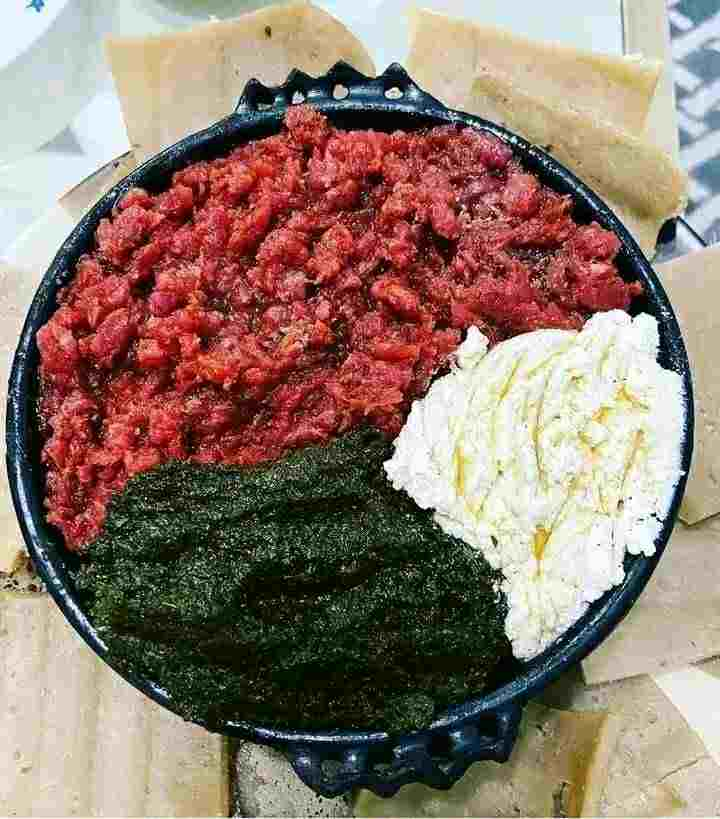

Kitfo is an Ethiopian traditional dish that
originated among the Gurage people.
It consists of minced raw beef, marinated in mitmita
(a chili powder-based spice blend)
and niter kibbeh (a clarified butter infused with herbs and spices).

Doro wat is a richly spiced, fragrant,
and delicious chicken-and-egg
stew from Ethiopia and Eritrea.
The chicken cooks in a flavour-rich
base of slow-cooked onions, berbere, niter
kibbeh (spiced clarified butter), ginger, and garlic.

Fetira is one of my favorite breakfast ever.
It can also be a snack or a Sunday brunch.
.jpg)
A hamburger or simply burger is a food
consisting of fillings—usually a patty
of ground meat, typically beef—placed
inside a sliced bun or bread roll
.jpg)
Beyaynetu (Amharic: በያይነቱ, romanized: bäyaynätu)
is an Ethiopian dish, often savoured as a hearty meal.
It combines injera—a sourdough flatbread—with a
variety of ingredients, including meat and vegetables.
One of the national dishes of Ethiopia, it reflects
the diverse flavours of the country's cuisine.
.jpg)
paghetti (Italian: [spaˈɡetti])
is a long, thin, solid, cylindrical pasta.
It is a staple food of traditional Italian cuisine.
Like other pasta, spaghetti is made of milled wheat, water,
and sometimes enriched with vitamins and minerals. Italian
spaghetti is typically made from durum-wheat semolina.